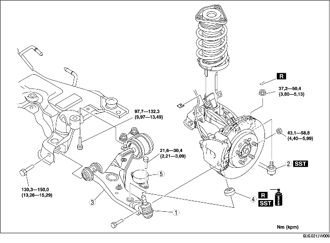

1. Demontera i den ordning som anges i tabellen.
2. Montera i omvänd ordning mot demonteringen.
3. Kontrollera hjulinställningen och justera vid behov. (Se HJULINSTÄLLNING FRAM.)

.
1. Ta bort centrumbulten för motorfäste nr. 1 (fordon med LF-motorer)
2. För motorn och växellådan något framåt. (fordon med LF-motorer)
3. Ta bort bulten på länkarmens baksida.
4. Ta bort nedre länkarm fram.
1. Torka bort fettet från kultappen.
2. Fyll den nya dammdamasken med fett.
3. Tryck på damasken på kulleden med hjälp av specialverktyget.
4. Torka bort överflödigt fett.
1. Montera den främre länkarmen tillfälligt.
2. Montera motorfäste nr. 1. (fordon med LF-motorer)
3. Dra åt bulten på länkarmens baksida.
4. Dra åt bulten på länkarmens framsida.
5. Dra åt muttern (främre länkarmens kulled).